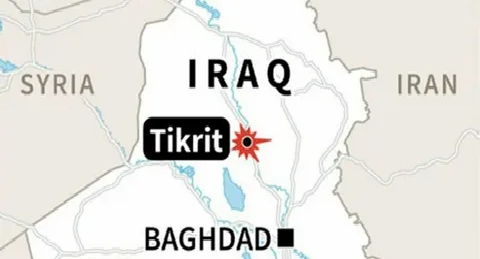
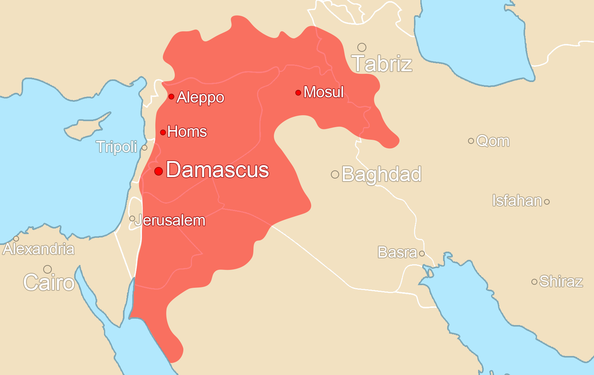
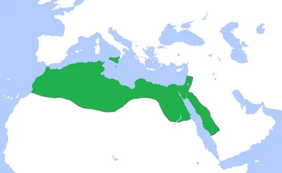

Yusuf, ya da yaygın adıyla Selahaddin Eyyubi, 1138 yılında Bağdat’ın kuzeyindeki Tikrit şehrinde dünyaya geldi
Babası Necmeddin Eyyub, Selçuklu emiri İmadeddin Zengi’nin hizmetindeydi. Oğuzların Afşar boyundan olan İmadeddin Zengi, Büyük Selçuklu Devleti’nin son zamanlarında Musul valiliğine tayin edilerek burada Musul Atabeyliğini kuran kişiydi. Onun El-Cezire ve Suriye’yi birleştirme çabalarının sonucunda Zengiler geniş sınırlara ulaştı. İmadeddin Zengi, Urfa Haçlı Kontluğu’na son verdiği gibi Şam Atabeyliğini de kendine tâbi kılmıştı. Ancak Ca’ber kuşatması sırasında şehit edilmesi, onun düşmanlarını harekete geçirdi. Papalık, onun vefatı üzerine Doğu Akdeniz’de kaybettikleri toprakları geri almak için 2. Haçlı Seferini başlattı
İmadeddin Zengi vefat ettiğinde Selahaddin Eyyubi henüz 8 yaşında bir çocuktu. Atabeyliğin başına geçen Nureddin Zengi onu küçük yaşında himayesine almış ve yetişmesiyle bizzat ilgilenmişti. Nureddin Zengi, Anadolu Selçuklu Sultanı 1. . Mesud’un kızıyle evliydi. Hadis ve fıkıh alanlarında eğitim görmüş, savaş sanatında büyük başarılara imza atmıştı, Ortaçağ İslâm Dünyası’nın en parlak simalarından biriydi. Babası İmadeddin Zengi’den devraldığı haçlılarla mücadelesinde Haçlılara karşı İslâm cephesini birleştirmiş, 2. Haçlı Seferi’nin etkisizleştirilmesini sağlamıştı. Saltanatı boyunca 50’den fazla şehri Haçlılar’dan geri almıştı. Zengiler’in bu fedakarlıkları sonucu Haçlılar daha fazla ilerleme imkanı bulamayarak sahil şeridine sıkışıp kalmışlardı. Böylece Nureddin Zengi’nin İslâm alemindeki prestiji Selçuklu hanedanını gölgede bırakacak kadar artmştı. Onun üç hayali vardı. İlki Müslümanları birleştirerek İslâm Birliğini kurmak, ikincisi Kudüs’ü haçlılardan geri almak, üçüncüsü de İstanbul’u fethetmekti...
O sıralarda Şii Fatımi Devleti son demlerini yaşamaktaydı. Ülkedeki iç karışıklık ve çalkantılar bitmek tükenmek bilmiyordu. Fatımi Hükümdarı Adud Li-dinillah 12 yaşında tahta geçmiş bir delikanlıydı. Ülkeyi onun adına vezirler yönetiyordu. Nureddin Zengi’den çekinen Haçlı Devletleri Nureddin’in de rakibi olan Şii Fatımi Devletinin zayıflığından faydalanmak istiyordu. Nihayetinde Haçlılar Mısır’a çıkarma yaptılar. Şii Fatımi Devleti’nin Haçlılara karşı koyma imkanı yoktu. Tek çare, Haçlılar’a karşı Sünnilerden yardım istemekti...
Bunun üzerine Adud Li-dinillah, Nureddin Zengi’ye mektup göndererek Haçlılara karşı yardım etmesini istedi. Nureddin Zengi, bu yardım teklifini geri çevirmedi ve komutanlarından Esedüddin Şirkuh’un emrine ordu vererek onu Mısır’a gönderdi. Şirkuh, Selahaddin Eyyubi’nin amcasıydı. Dolayısıyla o da amcasıyla birlikte bu ordudaydı. Nihayetinde Zengi ordusu ile Haçlı ordusu Nil Nehri'nin batı yakasında karşı karşıya geldiler. Az sayıda askeri olmasına rağmen Şirkuh, Haçlı ordusunu ağır bir yenilgiye uğrattı. Böylece Haçlı saldırıları püskürtülmüş, İskendiye şehri de Zengilerin eline geçmişti. Komutan Şirkuh, İskenderiye şehrinin idaresini yeğeni Selahaddin Eyyubi’ye bırakarak Said şehrine gitti. Kısa sürede burayı da Haçlılardan temizleyerek ele geçirdi. Ardından ordusuyla başkent Kahire üzerine yürüyen Şirkuh, burayı da Haçlılardan temizleyerek Mısır’da idareyi ele geçirdi. Fatımi Hükümdarı Adud Li-dinillah, Vezir Şaver’i hainliğinden ötürü idam ettirerek yerine başarılı komutan Şirkuh’u vezir tayin etti. Fakat Şirkuh 2 ay 5 gün sonra aniden vefat edince onun yerine vezirliğe yeğeni Selahaddin Eyyubi getirildi. Böylece Selahaddin Eyyubi, amcasının ölümünün ardından Zengilerin Mısır ordusu komutanı ve Fatımi Halifesi'nin veziri olarak bu iki önemli görevi üstlenmiş oldu...
Selahaddin, daha sonra Nureddin Zengi’ye danışarak onun naibi sıfatıyla Mısır’ı ve Mısır’a bağlı yerleri müstakil bir hükümdar gibi idare etmeye başladı. Kendisine ve Türkler’e karşı direnen Fatımi çevreleriyle mücadeleye girişti. Fatımi Sarayındaki Şiiler, onu iktidardan düşürmek için Haçlılardan yardım istedilerse de Selahaddin, kısa sürede bütün rakiplerini ortadan kaldırdı. Böylece rakipsiz duruma gelen Selahaddin Eyyubi, Mısır’a tam anlamıyla hakim oldu. Orduyu yeniden teşkilatlandırdı. Şiileri devlet kademelerinden uzaklaştırarak Sünni Medreseleri ve yeni kurumlar açtı. Fatımi Bürokrasisini kademeli olarak tasfiye etti. Nihayet Nureddin Zengi’den gelen emir üzerine 1171 yılında Şii Fatımi Devletine son verdi. Hutbe Abbasi Halifesi adına okunmaya başlandı. Böylece Kuzey Irak, Güney Anadolu, Suriye, Mısır, Trablusgarp, Sudan, Yemen ve Hicaz Nureddin Zengi’nin egemenliğine girmiş oldu...
Nureddin Zengi Kudüs’ü fethetmek üzere hazırlıklara giriştiği sırada Selahaddin Eyyubi’ye mektup göndererek ordusuyla birlikte Şam’a gelmesini emretti. Selahaddin, geleceğini bildiren bir mektup gönderdi fakat bir süre sonra gitmekten vazgeçti. Nureddin’e bir mektup daha yazarak özür diledi ve binek azlığı nedeniyle yardıma gelemeyeceğini bildirdi. Nureddin Zengi bu mektup karşısında hiddetlendi. Ordusuyla Mısır’a giderek Selahaddin’i görevinden azletmeyi bile düşündü. Bu anlaşmazlık ikilinin arasına bir soğukluk girmesine sebep oldu. Bir sene sonra Nureddin Zengi Ermeni Kralı Leon’un oğlu Mileh’i hizmetine alarak onu sınır boylarında Hıristiyanlara karşı kullandı. Doğu Roma ordusuna karşı Mileh’in emrine verdiği ordu Rumları büyük bir yenilgiye uğrattı. Bu sayede Mileh, Adana, Misis ve Tarsus’u Nureddin adına zaptettiği gibi bir çok miktarda ganimet ele geçirdi. Ertesi yıl Nureddin Zengi ile Anadolu Selçuklu Sultanı 2. Kılıçarslan karşı karşıya geldi. Nureddin Zengi, Müslümanlar arasında bir savaş olmasını istemiyordu. Barış için çok çabalasa da çabaları fayda vermedi. Kılıçarslan Kayseri yakınlarında ordu toplamış ve Nureddin Zengi’nin karşısına çıkmıştı. Ancak iki Müslüman devletin savaşmasının sadece Haçlılar’ın işine yarayacağını söyleyen alimlerin araya girmesiyle savaş önlendi ve anlaşma sağlandı...
Ertesi yıl Nureddin Zengi, Mısır’a yürümek üzere Şam’da büyük bir ordu toplamaya başladı. Fakat sefere çıkmadan önce Şam Kalesi'nde aniden vefat etti. Naaşı Hanefiler için yaptırdığı en-Nuriyyetü’lkübra adındaki medresenin girişindeki türbesine nakledildi. Nureddin Zengi, adaleti ve dindarlığından dolayı el-Melikü’l-adil lakabıyla anılırdı. Hanefi fıkhını iyi bilir ve hadis ilmiyle meşgul olmayı severdi. Geceleri sarayında ibadet ve zikir ile geçirir, zikre kalkmak isteyenleri uyandırmak amacıyla Şam Kalesi'nde belli saatlerde davul çaldırırdı. Nizamülmülk’ten sonra en çok medreseyi o hizmete açmıştı. İbnü’l-Esir’in yazdıklarına göre Hulefa-yi Raşidin ile Ömer bin Abdülaziz’den sonra Nureddin Zengi’den daha iyisi, daha adaletli ve merhametlisi görülmemişti...
Allah kendisine rahmet etsin...Nureddin Zengi’nin vefatından sonra yerine on bir yaşındaki oğlu İsmail geçti. Selahaddin Eyyubi başlangıçta İsmail’e bağlı kaldı, onun adına hutbe okuttu ve parayı onun adına bastırdı. Lakin İsmail, devleti idare edecek yaşta olmadığından devlet işlerini yürütecek bir naib veya atabeye ihtiyacı vardı. Nureddin Zengi’den sonra ülkenin en güçlü komutanı olan Selahaddin Eyyubi bu göreve en layık kişi olarak görülüyordu. Fakat onun Mısır’da bulunmasını fırsat bilen Zengi komutanları Haçlı tehlikesine rağmen İsmail’e atabey olmak için birbirleriyle mücadeleye giriştiler. Ülkede büyük bir iç karışıklık başladı. İbn-i Kesir’in deyimiyle, Emirler ihtilafa düştüler. Fikirler karıştı ve şaşkınlık ortaya çıktı. Şerler meydana geldi. İçki ve fuhuş ayyuka çıktı. Oysa ki Nureddin Zengi devrinde böyle şeylere kimse cesaret edemezdi. Ancak Nureddin vefat edince bazı emirlerin iç yüzleri ortaya çıktı...
Nihayet Musul ve Halep komutanlarının ittifakıyla Sadeddin Gümüştegin, İsmail’in atabeyi oldu ve onu Şam’dan alıp Halep’e götürdü. Bu karışıklıktan istifade eden Haçlılar, Müslümanlar üzerine tekrar saldırılara başladılar. Nihayet birleşerek Şam’ı ele geçirmeye karar verdiler. Haçlılara karşı savunma yapamayacağını anlayan bazı Zengi emirleri Selahaddin’e haber göndererek onu Şam’a davet ettiler. Selahaddin Eyyubi, derhal ordusuyla Şam’a doğru harekete geçti. Selahaddin’in Mısır’dan hareket ettiğini öğrenen Haçlılar, ordularını Şam şehrinden çektiler. Selahaddin’in başlıca iki hedefi vardı. Birincisi Zengi Devletinin dağılmasını önlemek, ikincisi ise Haçlılar’ın elindeki şehirleri, özellikle Kudüs’ü kurtarmaktı...
Selahaddin Şam’a varınca taraftarlarınca coşkuyla karşılandı. Şam ile birlikte Busra ve Havran kendisine katıldı. Devam ederek Halep’e yöneldi. Halep’in kendisine teslim edilmesini istedi. Selahaddin ve ordusu karşısında Zengi ümerasının şansı yoktu. Ancak İsmail ve Halep orduları Selahaddin’e hakaretler ile dolu mektuplar gönderdiler. Ardından Musul Valisi Seyfeddin Zengi’den destek istediler. Musul valisi Seyfeddin Zengi, Nureddin Zengi’nin ağabeyiydi. Musul’dan yola çıkarak Selahaddin’e karşı yeğeni İsmail’e desteğe gelmişti. Halepliler’in ordusu Selahaddin’in ordusundan sayıca fazlaydı. Selahaddin Hama şehrini kuşatmaktayken Halep orduları Selahaddin’e karşı harekete geçti...
Selahaddin ordusunu tek sıra halinde dizmişti. Kardeşinin orduları da ona destek için Şam’dan yola çıkmıştı. Selahaddin takviye ordular gelene kadar Halepliler’i oyalamak maksadıyla onlara yumuşak üslupla mektuplar yazdı. Mektubunda ben Şam şehriyle yetinirim. Hama, Humus ve Halep sizin olsun, benim Zengilere hizmetim çoktur. Sizinle savaşmak istemem gibi ifadeler de kullanmıştı. Ancak Halepliler anlaşma şartlarına ağır maddeler ekleyince Selahaddin anlaşmayı reddetti. Bunun üzerine harp vaziyeti alındı. Bu sırada Selahaddin’in Şam’dan takviye askerleri harp sahasına geldi. Şimdi durum Selahaddin lehine değişmişti. Burada bu iki Müslüman ordu şiddetli bir muharebeye tutuştu… Savaşın kazananı Selahaddin Eyyubi olmuştu...Selahaddin ordusunu tek sıra halinde dizmişti. Kardeşinin orduları da ona destek için Şam’dan yola çıkmıştı. Selahaddin takviye ordular gelene kadar Halepliler’i oyalamak maksadıyla onlara yumuşak üslupla mektuplar yazdı. Mektubunda ben Şam şehriyle yetinirim. Hama, Humus ve Halep sizin olsun, benim Zengilere hizmetim çoktur. Sizinle savaşmak istemem gibi ifadeler de kullanmıştı. Ancak Halepliler anlaşma şartlarına ağır maddeler ekleyince Selahaddin anlaşmayı reddetti. Bunun üzerine harp vaziyeti alındı. Bu sırada Selahaddin’in Şam’dan takviye askerleri harp sahasına geldi. Şimdi durum Selahaddin lehine değişmişti. Burada bu iki Müslüman ordu şiddetli bir muharebeye tutuştu… Savaşın kazananı Selahaddin Eyyubi olmuştu...
 .
.Selahaddin, askerlerine kaçanların kovalanmamasını, yaralıların öldürülmemesini ve esirlerin serbest bırakılmasını emretti... Hama, Humus, Müniç, Azez şehirleri kısa sürede Selahaddin Eyyubi’nin eline geçti..
Selahaddin ordusuyla durmadan ilerleyerek Halep şehrini kuşatma altına aldı. Halepliler Selahaddin Eyyubi’ye suikast düzenlemeleri için Haşhaşiler ile anlaştılar. Haşhaşilerden bir kısım fedailer Selahaddin’in askerlerinin kılığına bürünerek onun ordusuna sızdılar ve kuşatmada savaştılar. Kuşatmalar devam ederken Selahaddin’in cephede dolaştığı bir sırada Haşhaşiler bir fırsatını yakalayıp Selahaddin Eyyubi’ye saldırdılar. İlk saldıran fedai elindeki bıçakla Selahaddin’in başına vurdu. Ancak bıçak darbesi Selahaddin’in miğferine isabet etti ve kayarak Selahaddin’in yanağını yaraladı. Ardından bu fedai Selahaddin’i yere yatırıp boğazlamak istedi. Selahaddin’in askerleri durumu fark edince koşarak saldırganın üzerine atladılar. Onu öldürüp paramparça ettiler. Sonra aynı anda başka bir fedai Selahaddin’e hücum etti. Ancak o da öldürüldü. Sonra bir başka fedai emirlerden birine saldırmaya çalıştığı sırada öldürüldü. Dördüncü fedai ise canını tehlikeye atmamak için kaçtı. Ancak o da yakalanıp öldürüldü. O gün kuşatma durduruldu. Selahaddin Eyyubi, Haleplilere çok öfkelenip gazaplanmıştı. Ordu iyice teftiş edildikten sonra Halep Kuşatmasına devam edildi. Halep’e giriş çıkışlar kapatılarak şehir halkı açlığa mahkum edildi...
Zor durumda kalan Melik İsmail nihayet anlaşma isteyince Selahaddin Eyyubi kendisiyle dost geçinmesi şartıyla Halep ve civarındaki bir kaç önemli kaleyi Melik İsmail’e bırakmaya karar verdi. Böylece Selahaddin Eyyubi, Melik İsmail’in atabeyi olmak amacıyla çıktığı seferden bir sultan olarak dönüyordu. Eyyubi Sultanlığı, bu seferin ardından Abbasi Halifesi tarafından resmen tanındı. Selahaddin Eyyubi’nin Suriye ve Mısır’daki hakimiyeti de böylece onaylanmış oldu...